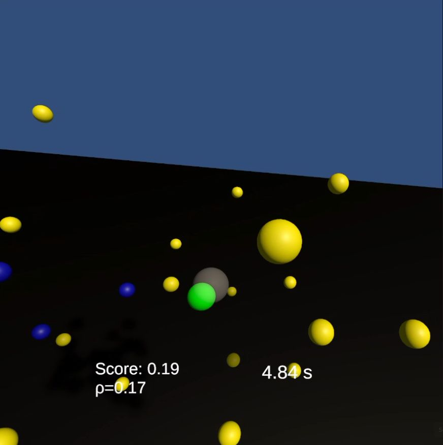
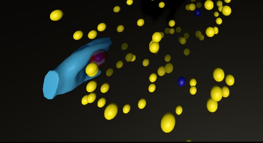
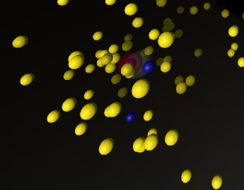
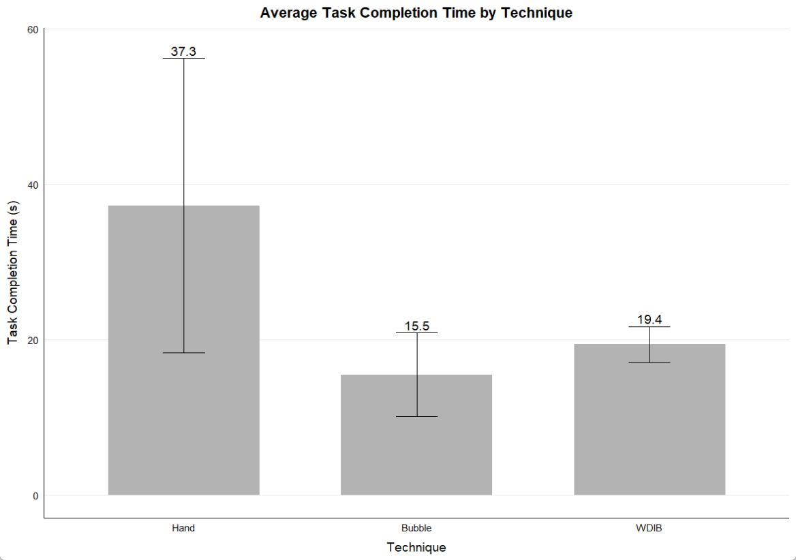
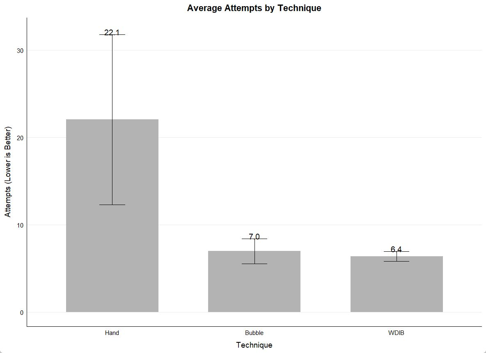

How close is it?
A smooth, clamped distance score favors nearby targets inside the configured detection range.
Dᵢ = clamp(1 − dᵢ / R, 0, 1)ADAPTIVE BUBBLE VR / SPATIAL INTERACTION
Find the target.
Feel the difference.
Motion and density guide VR target selection.Unity / OpenXR · Adaptive intent scoring.

Three signals. One recommendation.
01 / EXPLORE THE MECHANISM
Move through the field and watch the recommendation change. Compare distance-only scoring with the weighted, density-aware intent score used by the prototype.
MOVE POINTER OR DRAG · ARROW KEYS SUPPORTED
12-candidate 2D scoring illustration. Move the controller to explore distance, motion, and local density.
02 / HOW IT WORKS
WDIB stands for Weighted and Density-Aware Intent Bubble. In dense regions, proximity receives more weight; in sparse regions, the direction of motion contributes more.
A smooth, clamped distance score favors nearby targets inside the configured detection range.
Dᵢ = clamp(1 − dᵢ / R, 0, 1)The alignment between hand movement and the direction to each candidate estimates the next intended target.
Tᵢ = max(0, v̂ · p̂ᵢ)The nearby candidate count shifts the balance between distance and directional alignment.
ρ = clamp(Nnear / 12, 0, 1)Sᵢ = (0.7 + 0.4ρ) Dᵢ + 0.3(1 − ρ) Tᵢ
Exposed script defaults. Unity Inspector settings can override them.03 / THREE WAYS TO SELECT
The study compared direct hand collision, a fixed bubble, and WDIB within the same participant group.

Direct hand movement and contact.

Distance-driven feedback with a red highlight.
Distance and motion inform the green recommendation.
Actual prototype captures from presentation slide 4. Color is part of the original experimental conditions.
04 / THE STUDY
A within-subjects VR study asked five adult volunteers to select five targets in a high-density scene with 300 distractors. Each participant used all three techniques.
| Technique | Completion time (s) ↓ | Attempts per target ↓ |
|---|---|---|
| Hand collision | 37.3 ± 18.9 | 22.1 ± 9.7 |
| Fixed bubble | 15.5 ± 5.4 | 7.0 ± 1.4 |
| WDIB | 19.4 ± 2.3 | 6.4 ± 0.6 |
WDIB recorded fewer attempts and lower reported variability on both reported measures.
Four of five preferred it. On the reported 1–7 scales, WDIB had mean stability 5.6 and physical demand 1.8.


UNITY / OPENXR / C#
Build adaptive VR interaction with Unity, OpenXR, and C#.